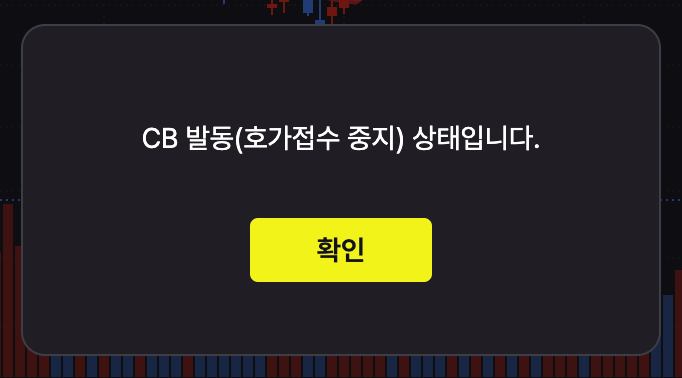

사이드카와 서킷브레이커는 무엇일까?
사이드카와 서킷브레이커는 주식투자를 하다 보면 종종 들을 수 있는 단어이지만 특히 서킷브레이커를 경험해 보는 일은 쉽지 않은 일이다. 어느날 이 서킷브레이커 실제로 겪어보니 이 조치가 무엇인지 조금 더 알고 싶어져서 사이드카와 서킷브레이커에 대해 정리해 본다.
사이드카(side car)
선물시장이 전날에 비해 급등락 할 경우 현물시장의 프로그램 매매를 5분간 중단시키는 제도다. 발동 기준이 선물이고 실제 발동 대상은 현물임에 주의하자.
좀 더 상세히는 KOSPI 200 선물이 5% 이상, KOSDAQ 150 선물이 6% 이상 전날에 비해 오르거나 내리는 상황이 1분간 이어질 경우 5분간 주식시장에서 프로그래 매매를 중단시키는 제도다.
사람의 직접적인 트레이딩에 비해 프로그램 매매는 대량의 물량이 순식간에 거래되기 때문에 일반적인 트레이딩을 막지 않고도 순간적인 급등락을 막는 데는 효과적이라고 볼 수 있다.
서킷 브레이커(circuit breaker)
주식시장이 큰 폭으로 상승 혹은 하락할 때 모든 거래를 중단시키거나 심하면 아예 거래를 완전히 종료시키는 제도다.
좀 더 상세한 조건은 코스피나 코스닥 지수가 전일 기준 8%, 15%, 20% 이상의 오르거나 내리는 상황이 1분 이상 이어질 경우 발동된다. 수치가 세 단계이기 때문에 세 단계 중 하나가 발동되며 1단계 및 2단계는 20분간 거래 중지 후 10분간 동시호가를 접수받아 단일가 매매만 진행, 3단계는 당일 거래를 완전히 종료시켜 버리는 강력한 조치가 발동된다.
장 마감 40분 전까지만 발동 가능하기 때문에 한국 기준 2시 50분 이후에는 발동되지 않는다. 그리고 하루에 한 차례만 발동 가능하다.
특이하게도 발동되면 아예 호가 접수 조차 안 된다. 즉 거래 중지 정도가 아니라 아예 작동이 멈추게 만드는데 회로차단기(circuit breaker)라는 이름과 딱 맞아 떨어지는 조치 같다.
여담
 이 글을 쓰게 만든 2024년 8월 5일의 실제 스크린샷(KB증권 마블와이드)
실제로 겪어보니 과연 이게 공포를 막을 수 있나 회의적인 생각이 들었다. 오히려 이런 조치가 장이 심각하다는 의미이기 때문에 공포를 더 키우는 것이지 않을까? 다만 개인적으론 저가 매수를 시도하다 이 조치로 낭패가 된 경우를 겪어봤기에 의미는 좀 달랐긴 했다.
어쨌든 두 제도 모두 미국에서 먼저 생겨났고 한국이 이를 비슷하게 도입한 제도인데 특이한 점은 사이드카는 미국에선 폐지된 제도라는 점이다. 미국과 같은 거대한 시장에서는 사람에 의한 트레이딩도 프로그램 매매 급일 수도 있으니 프로그램 매매 정지는 무의미한 조치일 지도 모르겠다. 할 수 있다면 그냥 프로그램 매매 속도를 좀 느리게 한다거나 하는 방안도 있을 것 같은데 비슷하면서도 다른 효과일 지도 모르겠다.
어쨌거나 둘 다 상승 때 발동이 가능하나 패닐셀이 아니면 발동되기 힘든 기준이기 때문에 결론적으로 폭락 시에만 발동된다고 봐야 할 것 같다. 즉 시장에 피가 낭자할 때나 보이는 두 단어라 가급적 보고 싶지는 않은 것 같다.